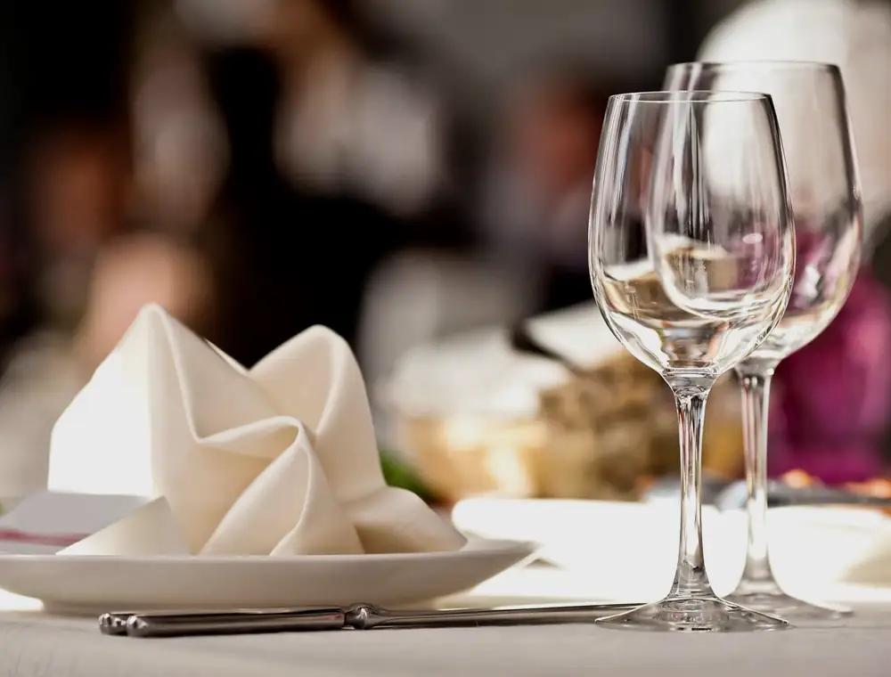

Grüß Gott, Stirling
The man behind the name
Hermann
Aschaber.
From the Tyrol to Stirling’s Old Town: chef-owner Hermann uses Scotland’s best produce to cook the Austrian favourites he grew up with.
30+years in Stirling1cosy winter fire2culinary traditions
